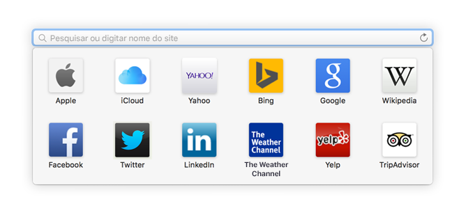
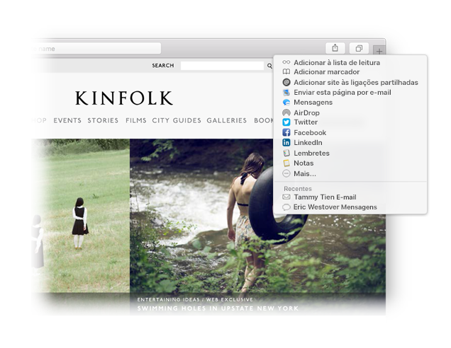

Encontre um favorito.
Clique no campo de pesquisa inteligente para aceder aos sites favoritos. Clique num site para ir até lá.

Afixe um website.
Arraste um separador para a esquerda para afixar um website, e ele fica afixado na barra de separadores.

Partilhe uma ligação.
Clique em  para enviar uma ligação num e-mail ou texto, partilhá-la no Facebook ou Twitter, ou adicioná‑la a Notas.
para enviar uma ligação num e-mail ou texto, partilhá-la no Facebook ou Twitter, ou adicioná‑la a Notas.